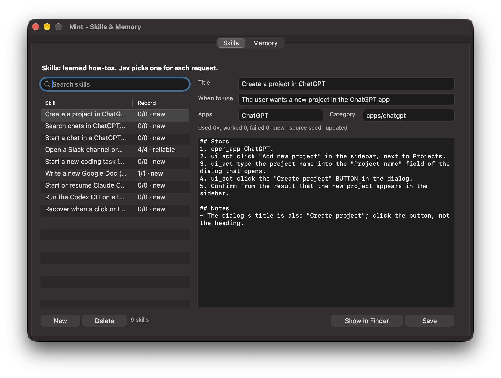

Skills
A skill is a short how-to for a kind of task: when to use it, the steps that work, and notes. For each request, Jev picks the one skill that fits from the real list, or none, in about a second.

save how to do that as a skill
next time use the sidebar
update the ChatGPT skill: the button is called Create
what skills do you have?
delete that skill
show me your skills
How Mint learns by itself
- A task took six or more steps, recovered from a failure, or you corrected Mint along the way.
- A background model writes it up: only the steps that worked, generalised, with your corrections as notes. If a skill for it exists, it is updated instead of duplicated.
- Each time the skill is used, the result is recorded. Skills rise through new learning reliable, or get marked shaky and fixed.
Skills are grouped in category folders (skills/apps/chatgpt/…). A skill for one app is only used when your request is about that app. Seeds ship for ChatGPT (projects, chats, search), ZCode, Claude Code, Codex, Slack channels, Google Docs, and what to do when a click does nothing. Deleted skills go to skills/_archive.
Memory
One fact per block, grouped: core, people, work, accounts, schedule, preferences, places, vocabulary, misc. Only what matters to a question is looked up.
remember my manager is Meera
make that a fixed memory
my manager is now Rahul
who's my boss?
forget my old address
what do you remember about me?
show me what you remember
| Say | Tool | What happens |
|---|---|---|
| “remember …” | remember | Jev files it in a group and replaces a fact it contradicts, in one call |
| “make that fixed” | remember fixed | Always in Mint's mind; everything else is recalled on demand |
| “… is now …” | update_memory | Changes the fact |
| “who's my boss?” | recall | Jev checks every block and returns only the relevant ones |
| “forget …” | forget | Removes it |
Facts are also picked up from conversation summaries. Read and edit every fact in the Skills & Memory window (Memory tab), or in memory/MEMORY.md.